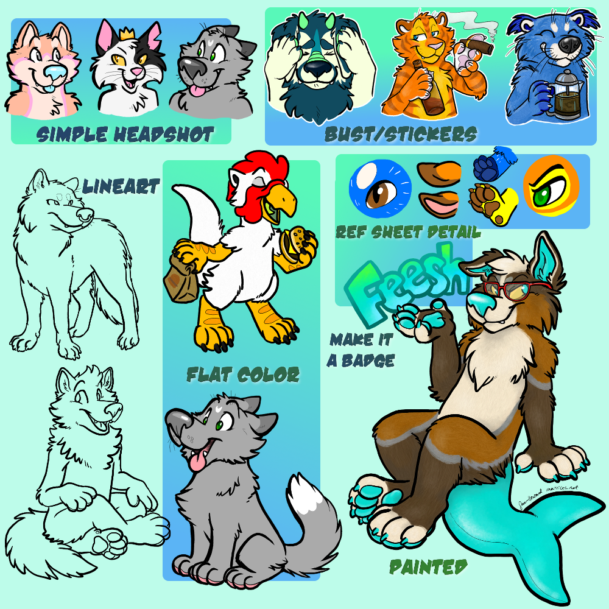

Thank you for thinking of me to choose as your artist! I specialize in cartoony furry art illustrations, and I tend to offer digital commissions that will be delivered to you as a file, but occasionally do other stuff like real media, mixed media illustrations.
The typical art I make for a client or recipient is for their personal use only, this means any non-commercial or non-business use. Provided they credit me as the artist ("by Matrices" my alias is preferred over my human name), clients or recipients are permitted to use the art I create for them as an icon, crop or color correct, upload or share to a personal gallery, show their friends, or even print it out for themself (such as stickers, to put on wall, etc). I am very flexible and love to see my artwork cherished and used by those who have recieved it. Credit should not be separated from the art if a character I did art for is given to another recipient. If you are not sure if you have permission for a unique personal use, you can always contact me and ask (even if it is an older artwork!).
Art I make for an individual client or recipient cannot appear on advertising, merchandise, or printed materials that are sold (such as stickers for sale), appear on business cards, etc, without separate written permission. Since that would count as a business use and additional discussion and/or compensation would likely be required to grant that type of permission. If you need something for your business use, event, convention, or other commercial use I would be happy to discuss it with you via email. Its nice to know before beginning the project what you plan to use the art for!
I have worked with perhaps thousands of furry and non-furry clients over the many years I have taken art commissions! I appreciate every one of them for choosing to spend their hard earned money with me to obtain a piece of my creative work of their original characters, fursonas, adored pets or other fun ideas. I hope that my work can be a cherished part of your hobby or collecting life. Art commissions are a business transaction and I do my best to stay professional and on the topic at hand, which is creating the desired art I am paid to do. Character references and other reference images when working with me should be "safe for work" or cropped to be, if that is needed. While it should go without saying, if I create art for you or another recipient, it does not make me their representitive, everyone has their own personal autonomy.
I tend to post most art I create for others to my own personal galleries. I do my best to include credit to the person who originally paid to have it created and/or the recipient. If you have a preferred name or want to remain anonymous, you can always let me know! I must admit, sometimes I don't post every piece of art I make to a public gallery, I do it all on my own time. Delivery of commissioned work does take place digitally, but display in my own public galleries are not part of that delivery requirement. Instead, you are welcome to post commissions from me to your own personal galleries with credit.
I have lots of additional examples of my artwork in the "Done" categories of my Project Queue. If you see something you like, let me know!
While I do my best to accomodate everyone, please be aware there are times where I may need to work through paid work before I can take on additional clients. Ask for availibility!

© Sara Howard.